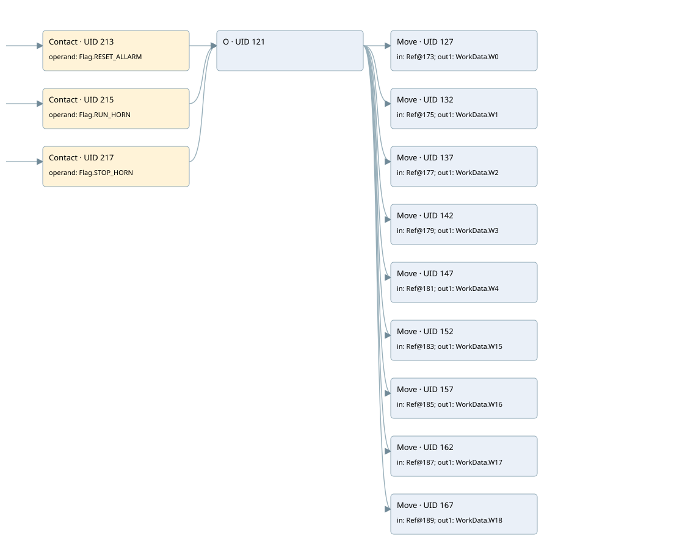

allarm manager
allarm manager · 검색 색인 순서 1 · 원본 내부 NID 추정 1
백업 PLF 원본의 2640687 바이트 위치에서 복원한 XML. 검색 문서 927의 객체 키 16102200720f000000000000와 연결했다. 이름 해석 12/21개. 남은 RefId는 상수 또는 미해석 참조다.
연결 구조 다시 그리기
원본 Part/PCon/Wire를 이용한 연결도다. TIA 화면의 래더 배치 또는 실행 결과를 재현한 그림은 아니다. 핀 연결은 아래 표와 원본 XML을 기준으로 읽는다. 노드 위에 마우스를 두면 피연산자 이름을 볼 수 있다.

접점·코일·블록과 피연산자
| Part UID | Gate | Negated 핀 | 연결 피연산자 |
|---|---|---|---|
| 213 | Contact | operand = Flag.RESET_ALLARM | |
| 215 | Contact | operand = Flag.RUN_HORN | |
| 217 | Contact | operand = Flag.STOP_HORN | |
| 121 | O | ||
| 127 | Move | in = RefId 8 / ORef UID 173; out1 = WorkData.W0 | |
| 132 | Move | in = RefId 12 / ORef UID 175; out1 = WorkData.W1 | |
| 137 | Move | in = RefId 15 / ORef UID 177; out1 = WorkData.W2 | |
| 142 | Move | in = RefId 18 / ORef UID 179; out1 = WorkData.W3 | |
| 147 | Move | in = RefId 21 / ORef UID 181; out1 = WorkData.W4 | |
| 152 | Move | in = RefId 24 / ORef UID 183; out1 = WorkData.W15 | |
| 157 | Move | in = RefId 27 / ORef UID 185; out1 = WorkData.W16 | |
| 162 | Move | in = RefId 30 / ORef UID 187; out1 = WorkData.W17 | |
| 167 | Move | in = RefId 33 / ORef UID 189; out1 = WorkData.W18 |
접점 경로를 펼친 조건식
Contact·O/A·비교기의 원본 연결을 읽기 쉽게 펼친 보조 해석이다. POWER는 전원 레일 시작을 뜻한다. 호출 블록·에지·타이머의 내부 동작과 다중 쓰기 순서는 이 표로 실행 검증하지 않았다. 미해석 핀과 RefId는 원문 연결표에서 확인한다.
| UID | 동작 | 대상 | 원본 접점 경로 | 내용 |
|---|---|---|---|---|
| 127 | Move | WorkData.W0 | (Flag.RESET_ALLARM OR Flag.RUN_HORN OR Flag.STOP_HORN) | Move 입력 ORef UID 173 |
| 132 | Move | WorkData.W1 | (Flag.RESET_ALLARM OR Flag.RUN_HORN OR Flag.STOP_HORN) | Move 입력 ORef UID 175 |
| 137 | Move | WorkData.W2 | (Flag.RESET_ALLARM OR Flag.RUN_HORN OR Flag.STOP_HORN) | Move 입력 ORef UID 177 |
| 142 | Move | WorkData.W3 | (Flag.RESET_ALLARM OR Flag.RUN_HORN OR Flag.STOP_HORN) | Move 입력 ORef UID 179 |
| 147 | Move | WorkData.W4 | (Flag.RESET_ALLARM OR Flag.RUN_HORN OR Flag.STOP_HORN) | Move 입력 ORef UID 181 |
| 152 | Move | WorkData.W15 | (Flag.RESET_ALLARM OR Flag.RUN_HORN OR Flag.STOP_HORN) | Move 입력 ORef UID 183 |
| 157 | Move | WorkData.W16 | (Flag.RESET_ALLARM OR Flag.RUN_HORN OR Flag.STOP_HORN) | Move 입력 ORef UID 185 |
| 162 | Move | WorkData.W17 | (Flag.RESET_ALLARM OR Flag.RUN_HORN OR Flag.STOP_HORN) | Move 입력 ORef UID 187 |
| 167 | Move | WorkData.W18 | (Flag.RESET_ALLARM OR Flag.RUN_HORN OR Flag.STOP_HORN) | Move 입력 ORef UID 189 |
원본 배선 연결
| Wire UID | 동일 Wire 연결 끝점 |
|---|---|
| 219 | Powerrail {} ↔ Part 213.in ↔ Part 215.in ↔ Part 217.in |
| 191 | ORef 170 (Flag.RESET_ALLARM) ↔ Part 213.operand |
| 214 | Part 213.out ↔ Part 121.in1 |
| 192 | ORef 171 (Flag.RUN_HORN) ↔ Part 215.operand |
| 216 | Part 215.out ↔ Part 121.in2 |
| 193 | ORef 172 (Flag.STOP_HORN) ↔ Part 217.operand |
| 218 | Part 217.out ↔ Part 121.in3 |
| 212 | Part 121.out ↔ Part 127.en ↔ Part 132.en ↔ Part 137.en ↔ Part 142.en ↔ Part 147.en ↔ Part 152.en ↔ Part 157.en ↔ Part 162.en ↔ Part 167.en |
| 194 | ORef 173 (RefId 8) ↔ Part 127.in |
| 195 | Part 127.out1 ↔ ORef 174 (WorkData.W0) |
| 196 | ORef 175 (RefId 12) ↔ Part 132.in |
| 197 | Part 132.out1 ↔ ORef 176 (WorkData.W1) |
| 198 | ORef 177 (RefId 15) ↔ Part 137.in |
| 199 | Part 137.out1 ↔ ORef 178 (WorkData.W2) |
| 200 | ORef 179 (RefId 18) ↔ Part 142.in |
| 201 | Part 142.out1 ↔ ORef 180 (WorkData.W3) |
| 202 | ORef 181 (RefId 21) ↔ Part 147.in |
| 203 | Part 147.out1 ↔ ORef 182 (WorkData.W4) |
| 204 | ORef 183 (RefId 24) ↔ Part 152.in |
| 205 | Part 152.out1 ↔ ORef 184 (WorkData.W15) |
| 206 | ORef 185 (RefId 27) ↔ Part 157.in |
| 207 | Part 157.out1 ↔ ORef 186 (WorkData.W16) |
| 208 | ORef 187 (RefId 30) ↔ Part 162.in |
| 209 | Part 162.out1 ↔ ORef 188 (WorkData.W17) |
| 210 | ORef 189 (RefId 33) ↔ Part 167.in |
| 211 | Part 167.out1 ↔ ORef 190 (WorkData.W18) |
식별자 해석 근거 21개
| ORef UID | RefId | 이름 | IdentXmlPart 파일 | 해석 방법 |
|---|---|---|---|---|
| 170 | 2 | Flag.RESET_ALLARM | 0565-IdentXmlPart.xml | UID/RID + search-text + NID agreement |
| 171 | 3 | Flag.RUN_HORN | 0565-IdentXmlPart.xml | UID/RID + search-text + NID agreement |
| 172 | 4 | Flag.STOP_HORN | 0565-IdentXmlPart.xml | UID/RID + search-text + NID agreement |
| 173 | 8 | 미해석 RefId | 식별 선언 원본 참조 | 미해석 |
| 174 | 10 | WorkData.W0 | 0565-IdentXmlPart.xml | UID/RID + search-text + NID agreement |
| 175 | 12 | 미해석 RefId | 식별 선언 원본 참조 | 미해석 |
| 176 | 13 | WorkData.W1 | 0565-IdentXmlPart.xml | UID/RID + search-text + NID agreement |
| 177 | 15 | 미해석 RefId | 식별 선언 원본 참조 | 미해석 |
| 178 | 16 | WorkData.W2 | 0565-IdentXmlPart.xml | UID/RID + search-text + NID agreement |
| 179 | 18 | 미해석 RefId | 식별 선언 원본 참조 | 미해석 |
| 180 | 19 | WorkData.W3 | 0565-IdentXmlPart.xml | UID/RID + search-text + NID agreement |
| 181 | 21 | 미해석 RefId | 식별 선언 원본 참조 | 미해석 |
| 182 | 22 | WorkData.W4 | 0565-IdentXmlPart.xml | UID/RID + search-text + NID agreement |
| 183 | 24 | 미해석 RefId | 식별 선언 원본 참조 | 미해석 |
| 184 | 25 | WorkData.W15 | 0565-IdentXmlPart.xml | UID/RID + search-text + NID agreement |
| 185 | 27 | 미해석 RefId | 식별 선언 원본 참조 | 미해석 |
| 186 | 28 | WorkData.W16 | 0565-IdentXmlPart.xml | UID/RID + search-text + NID agreement |
| 187 | 30 | 미해석 RefId | 식별 선언 원본 참조 | 미해석 |
| 188 | 31 | WorkData.W17 | 0565-IdentXmlPart.xml | UID/RID + search-text + NID agreement |
| 189 | 33 | 미해석 RefId | 식별 선언 원본 참조 | 미해석 |
| 190 | 34 | WorkData.W18 | 0565-IdentXmlPart.xml | UID/RID + search-text + NID agreement |
검색 코드 보조 자료
참조 명칭을 찾기 위한 자료이며 실행 순서나 AND/OR 관계는 위 연결표로 확인한다.
"flag".reset_allarm move %db3.dbw0 "flag".run_horn "flag".stop_horn move %db3.dbw2 "workdata".w1 move %db3.dbw4 "workdata".w2 move %db3.dbw6 "workdata".w3 move %db3.dbw8 "workdata".w4 move %db3.dbw10 "workdata".w15 move %db3.dbw12 "workdata".w16 move %db3.dbw14 "workdata".w17 move %db3.dbw16 "workdata".w18 "workdata".w0